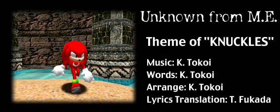

(ラップ） 俺はどんな奴よりもラフで、タフだぜ
ナックルズと呼んでくれ！
お調子者のソニックとは違うのさ
そんなへらへらしてる暇があったら、ヘイ！、この通り、俺の様に強くなることだな
邪魔するものは、どんな奴でも容赦しない
奴らと違って、俺は一匹狼
向かってくる悪を叩きのめす....使命であり、試練なのさ
太古の血を受け継ぎ
天空の島に生を受けた
悪意に侵食された善意の花
お前を護る為に
お前の心を解き放ってやるよ
新たな魂を宿すんだ
光りと狂音（響音）
そして本能が俺を走らせる
向かって来る者すべてに
使命を果たすだけさ
お前の心を解き放ってやるよ
邪悪な魂を浄化するんだ
怯えるぐらいなら苦しみや混乱と闘うことだ
頼ることでしか求める事が出来ないなら信じることだ
破壊や暴走を浄化する"Power"はそこにある
この星は俺の星 ...定めなら、闘い続けるさ
(ラップ） 俺はどんな奴よりもラフで、タフだぜ
ナックルズと呼んでくれ！
お調子者のソニックとは違うのさ
そんなへらへらしてる暇があったら、ヘイ！、この通り、俺の様に強くなることだな
邪魔するものは、どんな奴でも容赦しない
奴らと違って、俺は一匹狼
向かってくる悪を叩きのめす....使命であり、試練なのさ
俺に弱点なんかありゃしない
あいつを認めた訳じゃ無い
ここで友情をかわそう
今だけの俺とあいつの友情を
お前の心を解き放ってやるよ
新たな魂を宿すんだ
怯えるぐらいなら苦しみや混乱と闘うことだ
頼ることでしか求める事が出来ないなら信じることだ
静寂を取り戻す時、自由はそこにある
俺の星だ ...決してあきらめないさ
怯えるぐらいなら苦しみや混乱と闘うことだ
頼ることでしか求める事が出来ないなら信じることだ
破壊や暴走を浄化する"Power"はそこにある
この星は俺達の星 ...闘い続けるさ
怯えるぐらいなら苦しみや混乱と闘うことだ
頼ることでしか求める事が出来ないなら信じることだ
静寂を取り戻す時、自由はそこにある
俺達はこの偉大な星の上で生きていくんだ
（ラップ）ここにいるがたいのいい奴は他でも無い
たくましさを兼ね備えてやってきたぜ
よお、俺がナックルズだ
決してうぬぼれてなんかじゃないんだぜ
俺の拳は岩をも砕くのさ
だからおれは一人者でいたんだ
生まれた時からな
仲間なんかいらないぜ、自分で何でもできるさ
助言なんかやめてくれ、おれには関係ないからな